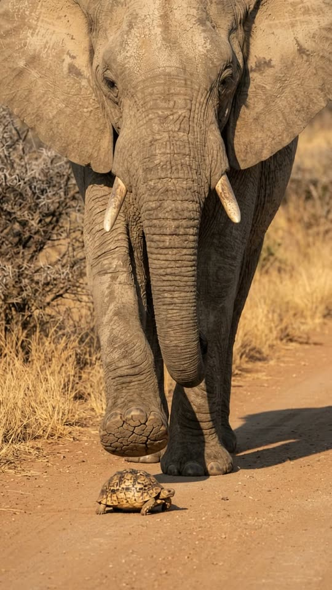
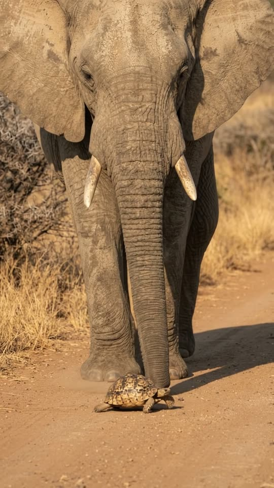
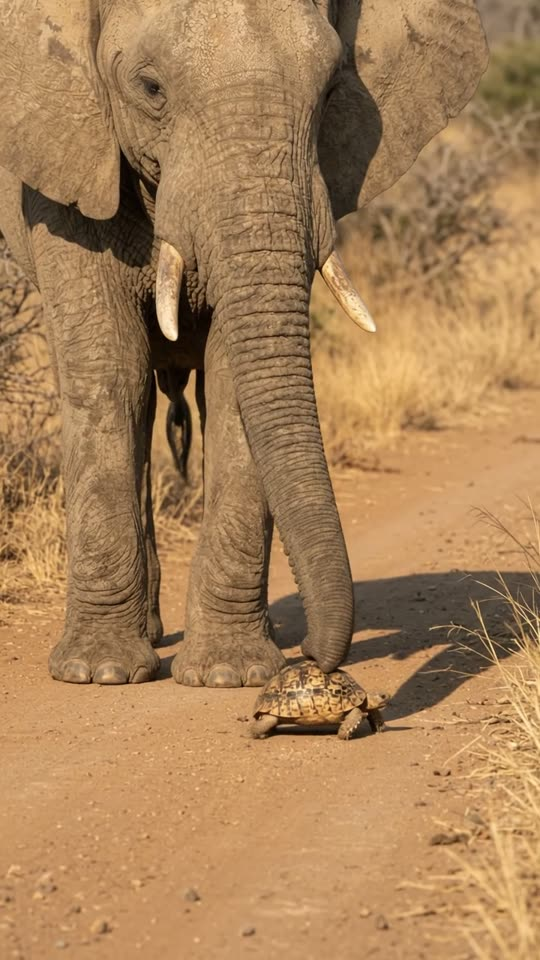
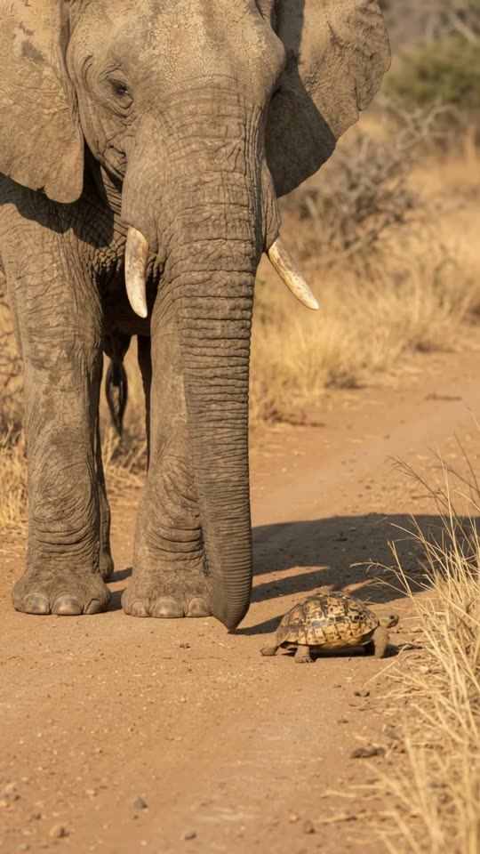

Free prompt pack
One step.One tortoise.
Nobody walked an elephant over a tortoise. One still image and one prompt that describes the shot second by second.
Every prompt, in the order I ran them. Copy them whole. Tap the ground.
The first frame
The foot is already in the air. This image is frame one, and the scare has to be in it: the elephant close enough to cut off its head, its front foot hanging right above the tortoise.
Watch out
If the two animals are apart in the image, the near miss never happens in the video. Put the tortoise under the foot first.

The prompt 138 words
Wildlife photo taken with a long lens from about eight metres away, at knee height, on a dusty dirt road through dry African savanna in the afternoon. A real African bush elephant walking toward the camera fills the frame from its tusks to its feet, the top of its head cut off by the frame: wrinkled grey-brown skin coated in pale dust, huge ears, medium ivory tusks, its trunk hanging between its legs. It is mid-stride, its frame-left front foot lifted in the air with the cracked sole showing, directly above a real leopard tortoise crawling on the road between its front feet: a high domed shell of tan plates with dark blotches, about thirty centimetres long. Dry golden grass and grey thorn bushes behind, softly out of focus. Warm sun from the left. Real photo, natural colour.
The take
Ten seconds, written second by second. Add the image from step 01 as the reference, set 10 s, 9:16, 720p and audio on, and paste the prompt whole.
- 0–1.2 sthe foot comes down toward the shell
- 1.2–3.2 sit stops a hand's width above
- 3.2–4.4 sset down beside her, not on her
- 4.4–6.2 sshe crawls out between his feet
- 6.2–7.6 sthe trunk finds her shell
- 7.6–10 stwo gentle pushes to the grass
Watch out
Lock the camera on the feet. If it tilts up to the head or follows the tortoise, the scare disappears.
Fragments



The prompt 1166 words
FORMAT Real wildlife video shot with a long lens, seen as the finished exported video file: the full picture edge to edge, nothing on top of it. One continuous take in real time, no cuts. Vertical frame. The video runs at 24 fps. No frame is repeated. Real time, 1x speed, never slow motion. SCENE On a dusty dirt road in the African savanna, an elephant walking toward the camera is about to put its front foot down on a tortoise crawling between its feet. The foot stops in mid-air a hand's width above the shell, hangs there, and comes down beside the tortoise instead. Then the elephant lowers its trunk and, with the tip on the back of the shell, gently pushes the tortoise along toward the side of the road. The foot is already in the air above the tortoise in the first frame. The take ends with the trunk tip on the back of the shell as the tortoise crawls on toward the grass. EXACTLY ONE ELEPHANT AND ONE TORTOISE. REFERENCE IMAGE Use it for the elephant, the tortoise, the road, the savanna and the light. The elephant and the tortoise match it exactly, zero drift, no smoothing: both are real animals in every frame. The action is described below. THE ELEPHANT One real adult African bush elephant, about five tonnes: wrinkled grey-brown skin coated in pale dust, huge ears, medium ivory tusks, a long trunk with a two-fingered tip, wide round feet with cracked soles. Calm and slow. It never charges, never trumpets, never rears. THE TORTOISE One real leopard tortoise, about thirty centimetres long: a high domed shell of tan plates with dark blotches, scaly grey-brown legs, a small head with dark eyes. It crawls slowly the whole time, about ten centimetres a second, and never withdraws or flips. LOCATION MAP The camera is about eight metres from the elephant, at knee height, looking straight along the dirt road at it. The elephant is so close that it fills the frame from its tusks down to its feet; the top of its head and its back are cut off by the top of the frame. The tortoise is on the road between the elephant's front feet, directly under its frame-left front foot. Frame-right of the elephant: the edge of the road and dry golden grass. Behind: grey thorn bushes, out of focus. The camera never moves closer or farther. FIRST FRAME Already moving: the elephant mid-stride, filling the frame at x 5-95%, its tusks at y 25%; its frame-left front foot lifted in the air at y 52%, the cracked sole facing the camera, directly above the tortoise; the tortoise on the road at x 40%, y 63%, between the front feet; the frame-right front foot planted at x 62%, y 62%; the road in the bottom third. Instant read: the elephant is about to step on the tortoise. No delayed reveal. OPTICS Long lens: compressed perspective, the background softly out of focus, the elephant and the tortoise sharp. Warm afternoon light. CAMERA Locked: almost still, only a faint drift. It never zooms, never pans, never tilts up to the elephant's head, never follows the tortoise, never cuts. The same grey thorn bush stays at the top-left corner of the frame in the first second and in the last second, and the elephant's feet and the tortoise stay in the lower middle of the frame the whole take. ACTION TIMING 0–1.2 s — Mid-stride, the frame-left front foot swings forward and starts to come down toward the tortoise below it; the tortoise keeps crawling, unaware. 1.2–3.2 s — The foot stops in mid-air a hand's width above the shell and hangs there, the cracked sole facing the camera, the elephant's weight held on its other three legs, its ears fanning slowly. 3.2–4.4 s — The elephant draws the foot back a little and sets it down slowly on the road just beside the tortoise, on its frame-left, a few centimetres from the shell, pressing a small puff of dust out from under it. The tortoise is untouched. 4.4–6.2 s — The tortoise crawls forward between the elephant's front feet and comes out in front of the frame-right front foot. 6.2–7.6 s — The elephant lowers its trunk to the road; the trunk tip comes to rest on the back of the tortoise's shell. 7.6–10 s — With the tip on the back of the shell, the trunk gives two gentle pushes, and the tortoise crawls on toward the dry grass at the frame-right edge of the road. The elephant stands still and watches. Hold to the last frame. PHYSICS AND SCALE The elephant has real weight: when it lifts the foot, its body shifts onto the other three legs; the foot comes down slowly and flattens on the dust, which puffs out from under it. The tortoise is tiny next to the foot, smaller than the sole. The foot never touches the tortoise; only the trunk tip touches its shell, softly. The tortoise moves at a real tortoise pace. Nothing floats, nothing is in slow motion. Nothing morphs: one elephant, one tortoise. LIGHTING Warm afternoon sun from the left of the frame: the elephant's shadow falls to the right across the road, its skin lit golden on the left side; the tortoise's shell catches the light. No other light. AUDIO No music, no score, no narration, no subtitles. Outdoor sound of the savanna: a dry breeze, insects buzzing, the heavy soft thud of the elephant's last step, the faint scrape of the tortoise's claws on the dirt, a low rumble from the elephant as it holds its foot up, the soft crunch and puff of dust as it sets the foot down, the dry swish of the trunk on the ground and a light tap on the shell. Nobody speaks. LOOK Real wildlife footage, seen as the finished exported file: crisp detail on the skin and the shell, natural colour, a little heat haze over the road, no colour grade, no teal-and-orange, no film grain, no lens flare, no slow motion, no cuts. No camera app interface: no shutter button, no gallery thumbnail, no record button, no icons, no timer, no frame lines. Both animals are photoreal living animals. NO FULL-FRAME EVENTS The dust stays low at the foot and settles at once; the elephant's feet and the tortoise are visible at every moment. No flash, no fade, no blur used as a transition. POSITIVE LOCKS Exactly one elephant and one tortoise, the same in every frame; no other animals and no people. The elephant's raised foot is the frame-left front foot, and it is set down beside the tortoise, never on it. The camera stays where it is. No captions, no subtitles, no on-screen text, no watermark, no logos, no letters anywhere, no camera interface, nothing on top of the picture. ONE ELEPHANT. ONE TORTOISE. ONE RAISED FOOT. ONE GENTLE TRUNK. NO CUTS. NO INTERFACE. NO SLOW MOTION. NO MUSIC.
Too far apart?
Fix the image, not the video. If your elephant is far away or the tortoise isn't under its foot, edit the image with this before you make the video.
The prompt 82 words
Edit this photo. Keep the road, the savanna, the light, the elephant's look and the tortoise's look exactly as they are. Bring the elephant much closer so it fills the frame from its tusks to its feet, with the top of its head cut off by the frame. Move the tortoise to the road between the elephant's front feet, and lift the elephant's frame-left front foot in mid-stride so it hangs in the air directly above the tortoise, the cracked sole showing.
Rule 01
Scare in frame one
The near miss has to be in the image. Two animals a metre apart never get close in the video.
Rule 02
Name the foot
Say which foot, where it stops and where it lands: frame-left, a hand's width above, a few centimetres beside.
Rule 03
Keep the head out
Frame it from the tusks to the feet. If the camera goes up to the face, the tortoise turns into a dot.
That's the whole build
Now go takea careful step.
If yours works, send it over. I read every DM and the good ones end up on the account.
@martiiifons